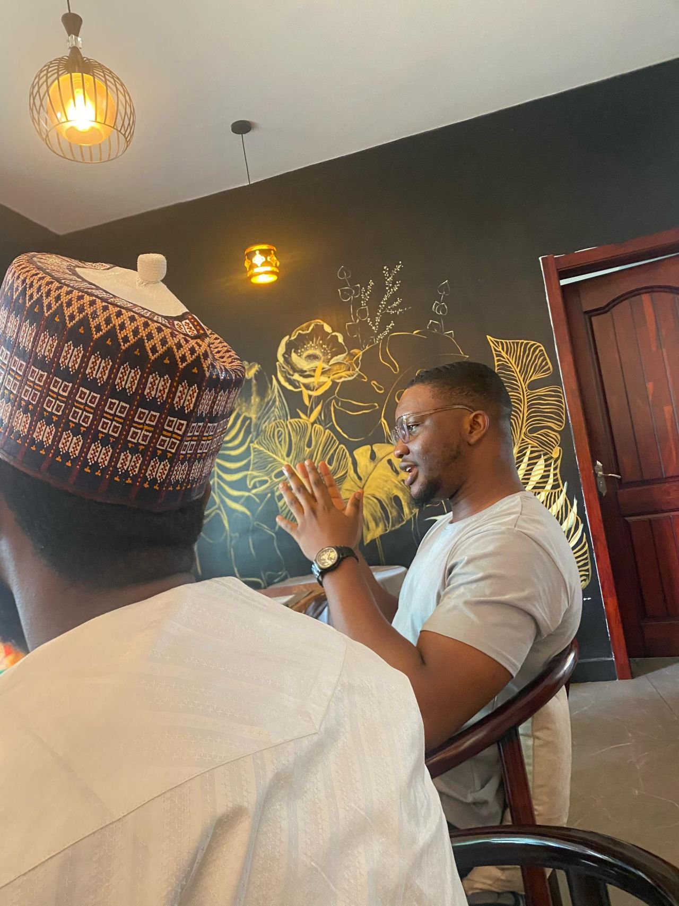
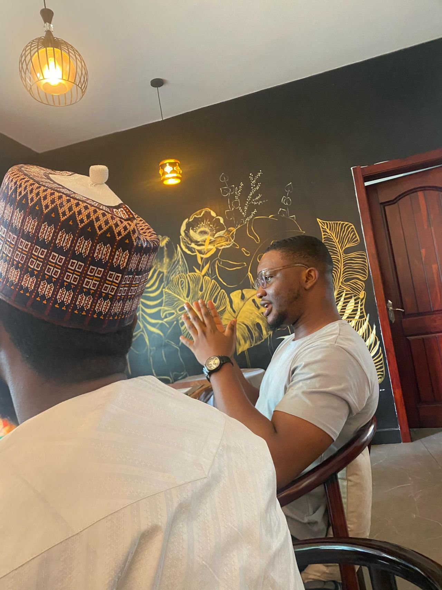

I’m Otobong Peter, a systems engineer, thinker and researcher with over six years of experience. My work focuses on designing, building and managing intelligent systems and products that power adaptive, context-aware applications - spanning developer platforms, B2B and consumer products, health technology, and real-world assets on-chain.
My technical career began in 2019 as a hardware intern, where I worked with microcontrollers and IoT systems. This hands-on foundation shaped my early interest in blending software with physical systems. For my undergraduate thesis, I designed a facial recognition–based smart door lock; my first exploration into intelligent systems on hardware.
In 2020, I led the Google Developer Student Club at Rivers State University and became deeply involved in developer education and open-source mentorship. I co-founded ABCD Africa to help developers across Africa break into blockchain technology and later helped grow the Nigerian Blacks in Technology chapter, which won Growth Chapter of the Year.
At LTO Network, I led software & platform engineering initiatives, building core infrastructure that powers decentralized identity and real-world asset products. I designed and maintained intelligent software systems including client libraries, cryptographic event chains, and platform services for products like the EQTY Passport. I've also built secure CLI tooling, real-time messaging pipelines, and developer-facing libraries that enable teams to build on the Ownables tech for RWAs.
Outside of coding or research, I write essays, lead events through the OpenForge community, and explore interests in leadership, theology, and fiction. I'm a Christian.
Skills & Tools
 
